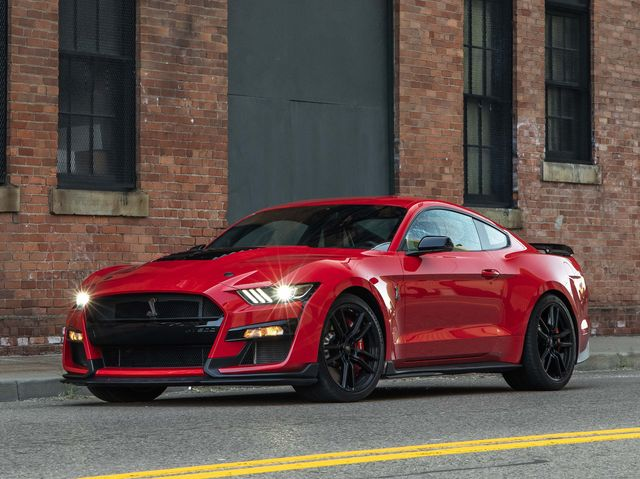
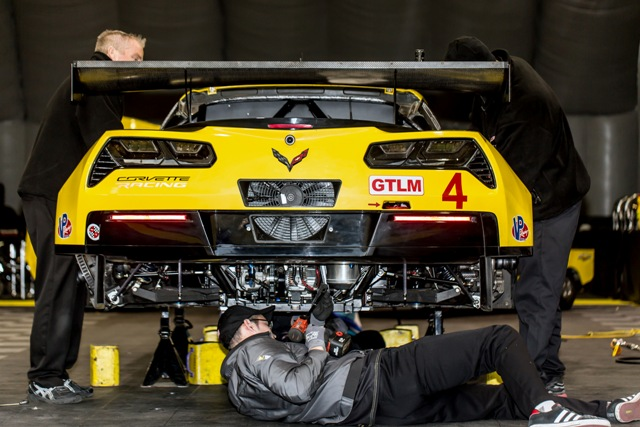

Origins
Modifying cars dates back to the 1950s and has been getting more and more modern each decade it has been
around. The car scene popped up around
the 1950s to have another form of entertainment aside from horse racing and for military troopers to blow of
some steam before getting deployed
to various wars and military campaigns. With every decade of the car scene cars became more quicker and
sleeker, this was done with the help of
advancing technology and engineering.
Classifications based on car
There different categories that you get put into based on the car you drive.
These categories are mainly based on where the car was manufactured which
in turn is based on the cars brand.
| Domestic | German/Euro Spec | JDM |
|---|---|---|
| Dodge Challenger Hell Cat | Audi RS5 | Nissan R35 GTR |
| Ford Mustang GT | VolksWagen Golf R | Honda S2000 |
| Chevorlette Corvette | Mercedes S550 | Lexus IS300 |
| Dodge Charger 392scat | Audi TTRS | Toyota Supra mk.4 |
Domestic
German/Euro Spec
JDM

How to get in the car scene
Go to your local car meets. Car meets are where you can see which style of car you like and ask owners
different questions like "what have you got done to it?".
Join a car club! Car clubs are a good way to connect with a group of people that either have the same style
of car or maybe the exact same company. I personally am in club lexus toronto.
Get into your new ride. Getting into the car scene can be you just working on your car and learning from your mistakes or successes. What works for you might just work for you. 
Which style do you like best?
Domestic
German/Euro Spec
JDM